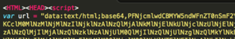

This particular encoding method takes the previous encodings and puts them all together, while adding a few tricks. It
starts with the data URI method (Fig. 15)

Upon base64 decoding this we are presented with some a hex-encoded string

Upon escaping the hex characters we are presented with the flipped base64 encoding method.

Upon flipping and base64 decoding, we are presented with a nested dean edwards JavaScript packer. This packer is very popular and easily decoded. Websites like http://jsbeautifier.org/ or tools like JSDetox (http://www.relentless-coding.org/projects/jsdetox) have no problem decoding it
After the second round of unpacking, the code is starting to emerge:
The last step to make it readable is to decode the URL encoding. Finally, we have the normalized phishing landing page